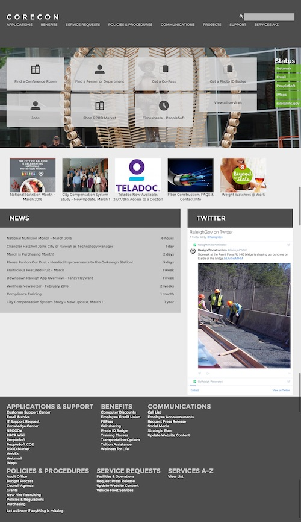

Chris Geyer
user experience designer | raleigh, nc
I am a user experience designer with over 8 years of experience. A Raleigh transplant by way of Philadelphia, I am passionate about simplifying the experience and improving the lives of people.
view resumeIn my last position as one of the first UX designers working in local government, I transformed the City of Raleigh's website into a better experience for its citizens.
I changed this into this.
raleighnc.gov
- Goals
- Responsive update for site
- Clean up cluttered navigation
- Provide better experience for citizens accessing city services
- Methods
- Redesign different content types piece by piece
- Usability Testing
- A/B Test
- Outcomes
- Confirmed grid layout for news items with simple presentation of headlines performed overwhelmingly better than previous carousel
- Added top tasks for most popular features on mobile planning to expand to desktop in future
City of Raleigh Utility Billing
- Goals
- Responsive update for site
- Update style to be more modern and clean
- Methods
- Managed SASS code utilizing Git while collaborating in agile cycles with other back end developers
- Outcomes
- Had no style bugs when site update went live and was well received
City Park Pages
- Goals
- Present most important information for citizens in an easy to use format
- Provide consistent information across all parks
- Methods
- Usability Testing, Design Studio, Prototyped and coded template
- Outcomes
- Compiled data for over 90 parks and input into the page template. Consolidated individual pages for park amenities into one park campus page allowing citizens to find all the information together. Amenities are listed in a consistent manner allowing anyone to see at a glance what is available at a park.
- Received lots of positive feedback on the clear design
City Project Pages
- Goals
- Present most important information for citizens in an easy to use format
- Provide consistent information across all projects
- Methods
- Design Studio, Prototyped and coded template
- Outcomes
- New page template allowed web editors to clearly and consistently provide updates and statuses on any city construction project to citizens.
- With somewhat dry content I chose to utilize css3 for the progress bar filling animations to add a small measure of unexpected delight for the user.
City Intranet Site
- Goals
- Migrate outdated Frontpage site to modern platform
- Pilot Drupal CMS for future use
- Make it more than a bulletin board and document archive
- Methods
- Card Sorting, Collaboration with graphic designers, Content Audit
- Outcomes
- Built this site out from the ground up myself while researching the best modules to use and training my team on how to add content to the site.
- Design allowed for more everyday top tasks to be featured on the homepage instead of stagnant city news by using mobile first priorities.
City Employee Directory
- Goals
- Provide all employees one place to go to find someone’s contact info
- Allow data to be viewed in real-time for clean up
- Methods
- Collaborative Sketching with paired developer
- Outcomes
- Collaborated with web developer on this internal web app where I worked on mostly the front-end and he did the back-end but we met in the middle.
- Conceived the visual design myself as well as allowed for employees to add their picture at a later date.
Grasshopper Group
{kind=link}
- Goals
- Design an on-boarding process for new customers during initial sign-up, eliminating confusion and reducing support costs
- Methods
- Remote usability testing sessions to iterate on prototype biweekly.
- Outcomes
- 5 step process well received by customers during usability testing
Numara Footprints
{kind=link}
- Goals
- Bring an updated look and ease of use to incoming issues on the agent’s dashboard
- Methods
- Ethnographic-based research and interviews with current customers of the product to determine which areas were lacking functionality the most
- Outcomes
- Designed a Ticket Queue for the agents that alerts them to certain tickets, helping them diagnose issues quicker
- Each issue has a simple information hierarchy and the ability to use QuickEdit for certain variables that can be edited in an overlay rather than leaving the page
Citi Ecount Customer Service Application
{kind=link}
- Goals
- Consolidate the old two screen application so there was no jumping back and forth between screens
- Allow quick access to actions that can be performed on an account
- Methods
- Sketching and iterative prototype design sessions with the client
- Outcomes
- Used a one screen design for an account profile with one-touch access to actions in the sidebar
- Allowed details on the profile screen to be edited inline, allowing changes to be made without reloading the page, saving time with the customer on the phone
American Public University System
{kind=link}
- Goals
- Make main contact information and action buttons prominent on the page
- Feature testimonials to help potential students know the benefits of an online education
- Methods
- Usability testing with current students to find important information missing on the site and unanswered questions they had after applying
- Outcomes
- Reduced application process from over 13 screens down to 3, utilizing progressive reveal model
- Provided an overview box to answer the major questions and details students have about a degree at a glance